We created a 4th-grade level science education kit for Microsoft Education's HACKING STEM. Our
experiment teaches the transformation of energy using a papercraft trebuchet, Arduino, and a digital interface.
Let's hack some STEM
ROLE
Digital interaction design
Front-end development
Visual design
User testing
LENGTH
10 weeks
YEAR
2019
I spearheaded the interaction design, visual design, and front-end development of an interactive data workbook.
My team and I worked with kids and teachers to develop and iterate on both digital and physical components of a STEM education kit. We recieved an award for Best Technical Implementation during an expo at Microsoft in Redmond, WA.
"Build an affordable inquiry and project-based activity to visualize data across science, technology, engineering, and math (STEM) curriculum."
Specifically, we were to create an experiment that cost under $10 per student (excluding the Arduino and computer), and that aligned with a Next Generation Science Standard.
The trebuchet, Arduino setup, and digital interface
The response
The Trebuchet Trials is a STEM education kit that encourages learning through play. Developed with the help of teachers, 4th grade students, and Microsoft Education,
it addresses the need to provide experiental STEM education to kids growing up in an increasingly digital world.
Our response was based on the 4th grade NGSS Standard 4-PS3-4: Apply scientific ideas to test a device that converts energy from one form to another. In our case, the trebuchet teaches the concepts of transforming potential to kinetic energy.
Live graphical mirroring
Using data streamed from an Arduino accelerometer, a digital trebuchet mirrors the movement of the physical trebuchet to create a delightful interaction.
Automated data tracking
Every time a projectile is launched, the interface automatically calculates the kinetic energy and graphs it in the data tracker. Minimal manual input lets students focus on identifying trends, not rote recording.
Targeted challenges
We found through classroom testing that students need specific goals so that the play-learning is structured. Asking them to hit certain criteria with their tests encourages critical thinking and pattern recognition.
Low-cost setup
Not including the Arduino and computer, this 3-student group activity is made from classroom materials. The main components are a $5 accelerometer and printed cardstock templates. It costs ~$4 per student.
At the outset, we knew we needed to develop a conceptual framework about what makes a successful educational experience for kids. We noticed trends
in STEM education have shifted towards creative experimentation and play as a form of learning. Some thought leaders like Mitchel Resnick also argue for the value of a constructionist approach, where students assemble the tool that is
then used for experimentation. We also thoroughly reviewed Microsoft's Hacking STEM projects.
Straight into concepting
Our ideation process started by selecting an interesting NGSS standard and generating a physical experiment and digital interface that we thought could teach it, while considering what we had gathered from our literature review.
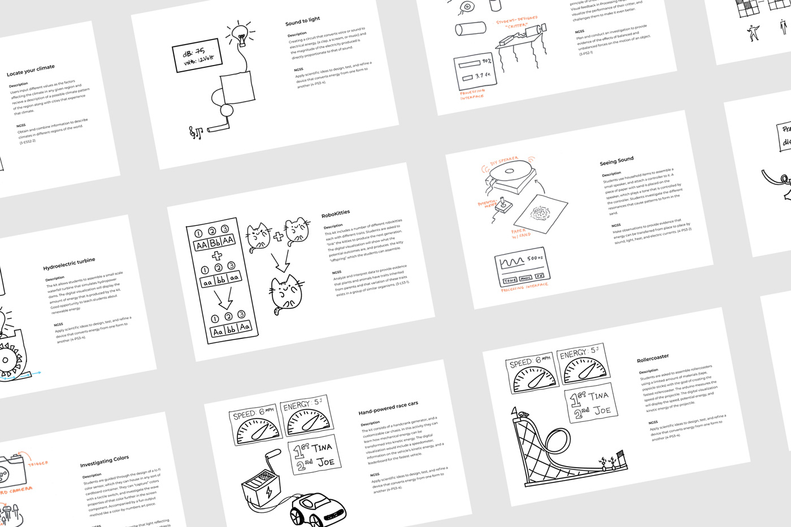
An initial set of experiment concepts.
Narrowing to 3
There were so many unknowns: were any of these ideas technically feasible? Would they spark joy and also be educational? Are they age-appropriate? We did our best to extrapolate these unknowns by gathering feedback from the studio
for the most promising directions forward. We looked more closely at the ideas that excited us and enumerated the unknowns, risks, and education value of each.
After a couple rounds of studio voting and discussions with advisors, we narrowed to the trebuchet, a hydroelectric turbine, and a DIY speaker, shown in sketches below.
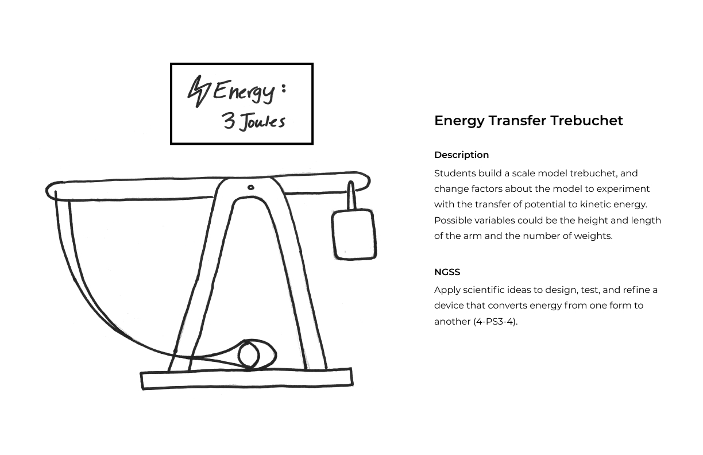
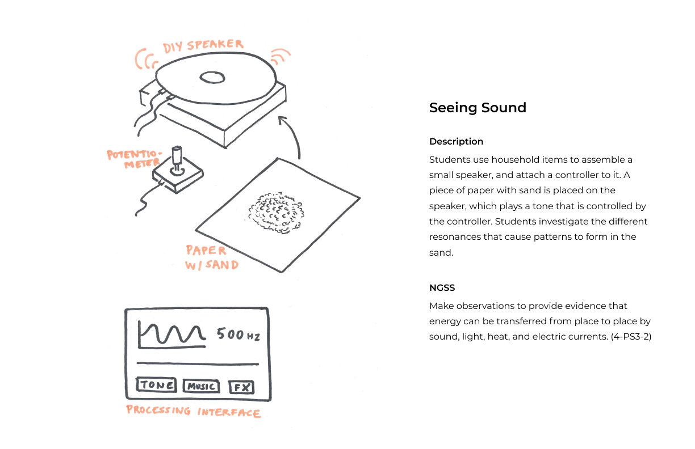
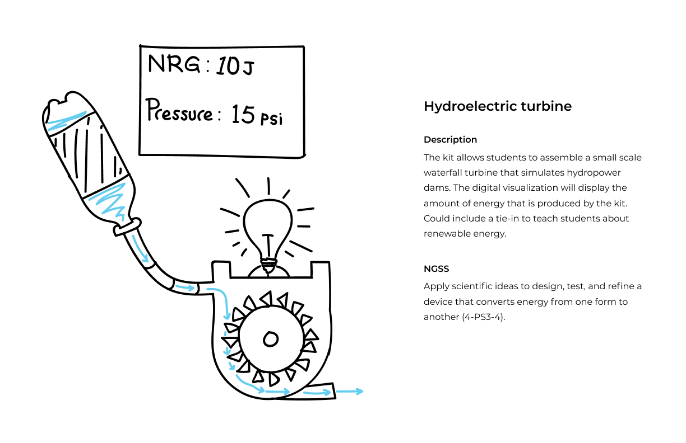
The three narrowed concepts.
Pushing ahead with prototypes
We needed to start getting our ideas in front of kids and teachers to help narrow into a single direction, so we made video and experiential prototypes for each concept. We showed the video prototypes to elementary school teachers, and
brought the experiential prototypes to a group of kids to gather their feedback.
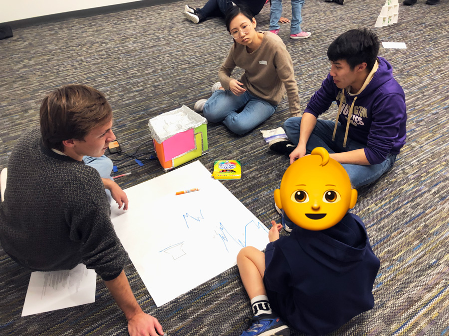
Practicing co-design with a kiddo!
Excerpts from video prototypes we shared with teachers. Trebuchet video by Javan Wang.
Triangulating stakeholder perspectives
Generating rapid prototypes made us start to grapple with designing for multiple stakeholders. We found that kids were highly engaged with the speaker and trebuchet concepts, that teachers thought the trebuchet was the most educational,
but that our contact at Microsoft thought that the trebuchet might descend into classroom chaos. We needed to find a way to make the experiments manageable in the classroom setting.
“In fourth grade we do an energy unit and this could perfectly tie into the unit, and actually work better than some of our existing science experiments... I would totally purchase this kit
for our energy unit next year if you created it.”
– Katie, 4th grade teacher (In response to video prototype)
Choosing the trebuchet
Ultimately we moved forward with the trebuchet. We knew that it was engaging for kids, and that the educational aspect was valid, but that one of our larger design challenges would be securing stakeholder buy-in from Microsoft. We also were unsure
of some of the technical aspects–which sensors could we use to collect the data needed to calculate energy? And how could we make the technical aspect simple enough for kids to set up?
The Wonderful Wizard of Oz
One of our first goals with the trebuchet was to develop a Wizard of Oz prototype that simulated the functioning activity. I expanded on the core functions of the interface–this early sketch imagines a hole-and-peg positioning system, a
timer, and projectile distance measurements.
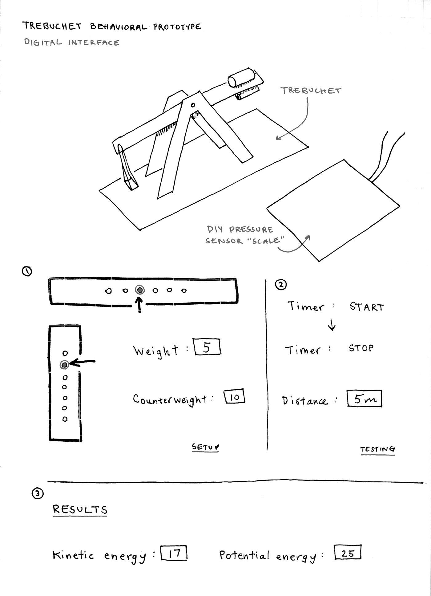
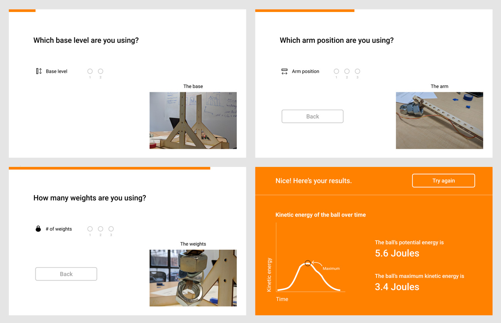
Digital iteration
The interface we used in WOZ testing was a clickable Figma prototype, where I acted as the wizard and input real-time "data" to simulate energy measurements. It used a stepwise input system that we discovered was unnecessary for the
experiment.
Responding to feedback
We found that the hole-and-peg system, where kids change the arm position as an experiment variable, was cumbersome and ineffective. Additionally, the relationship between the changes in variables and the resulting output data were too abstract. We responded by shifting to a variable weight system where kids control the amount of weights used and the type of projectiles used.
Validation in the classroom
We had the opportunity to test with a group of eighteen 4th graders during their classtime at a local elementary school. This was our chance to evaluate if the activity would descend into chaos–a potential death knell for the
trebuchet.
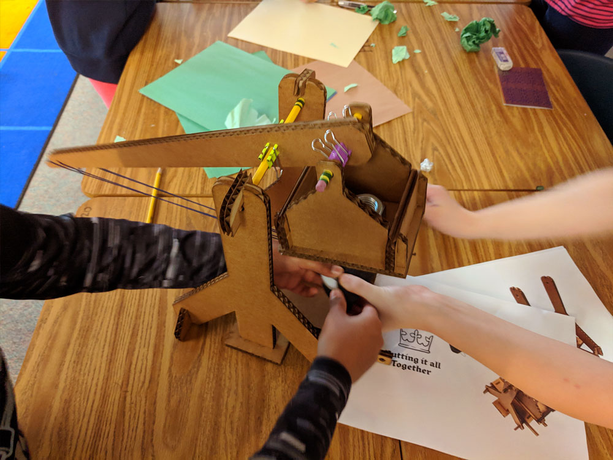
Kids experimenting with a laser-cut cardboard iteration of the trebuchet.
Lots of positives, and things to change
Surprisingly, the chaos we expected was averted! After a short demo, we had kids form groups to assemble and test the trebuchets. The building process was significantly quicker than we imagined, the educational value was apparent, and we received positive
feedback from both students and the teacher.
It wasn't all peaches and cream; we found that using a pouch-and-sling launch mechanism was frustrating, since it had a high rate of failure. It also became a game of "who can launch the biggest projectile the farthest?" Kids weren't
exploring the full range of variables.
Incorporating challenges
The teacher suggested that we incorporate specific goals for students to achieve in order to make the experiment more guided. We used this feedback to develop a set of challenges in the digital interface.
“Blake usually struggles a bit with school subjects and isn't as engaged as the other kids. But he loves building, and it was nice to see him really brighten up today.”
– Katie, 4th grade teacher
“I would buy this for one trillion dollars!”
– Angel, 4th grader
Benchmarking to current classroom materials
We were also excited to find that the students had just finished an energy unit, and understood the mechanics of the activity. We were able to look through the classes' paper worksheets to help benchmark the level of complexity to in-use
classroom materials. We looked specifically at the language used in assignments and the overall activity complexity.
Reflecting on the session
I felt that the success of the classroom test session was largely due to the fact that our homemade trebuchet just wasn’t that good. It launched fairly short distances even with a bunch of weights added–but that happened to be the perfect
way to control chaos in the classroom, while still allowing for fun and play.
We kept this in mind as we developed a cheaper cardstock template version of the experiment.
Let's get interactive
While we gathered insights from a series of behavioral and physical prototype tests, I took ownership of the project's digital interface and interaction design.
Move your cursor back and forth
Responding to a second co-design session
A second co-design session with kids revealed a lack of interactive joy in the interface. One kid suggested adding a flying cow that moved when the trebuchet was fired. Although I didn't include a cow, I took that as inspiration to create
the above interactive trebuchet graphic, which I mapped to the movement of the actual trebuchet. Data streamed from an accelerometer affords a 1:1 mapping, although above you can control it with just your cursor.
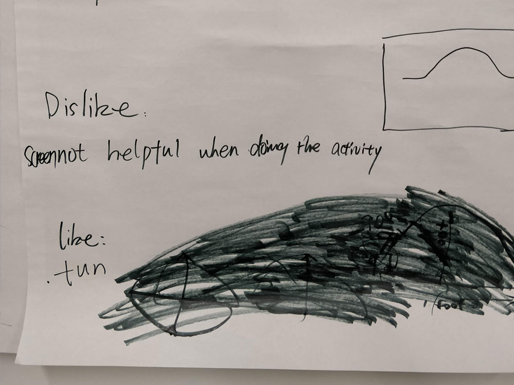
Kids didn't think the screen was helpful because it had minimal connection to the physical trebuchet.
Defining an interface
Triangulating our insights from multiple prototype tests, we formed a clearer picture of how each element in the interface could fit together.
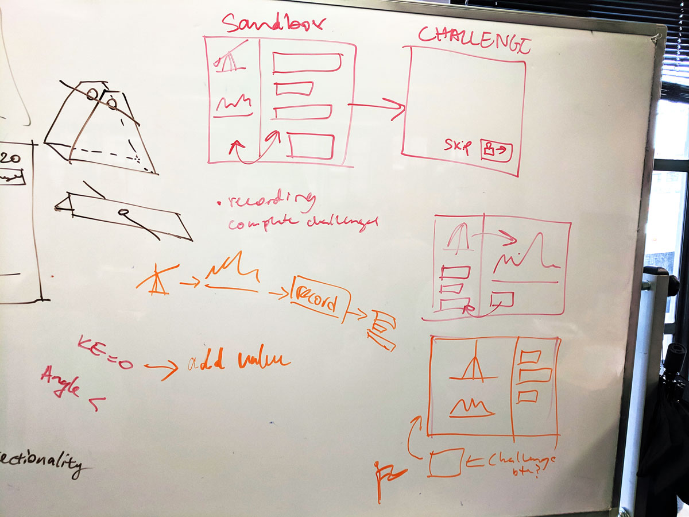
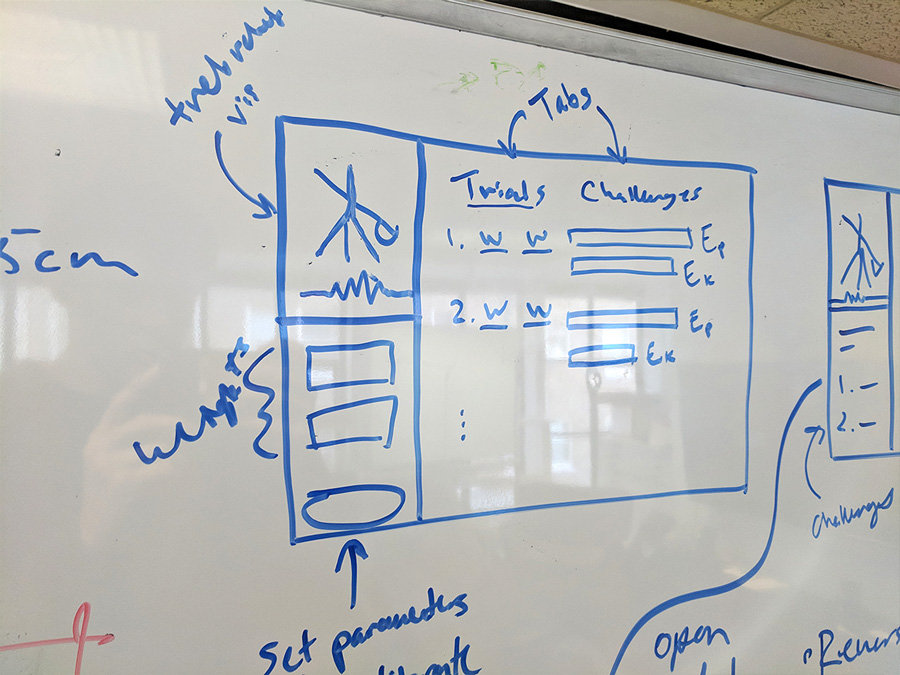
Whiteboard conversations with my team helped bring clarity to the layout of the interface.
First, sketching
I spent time sketching different directions and getting feedback before moving into Figma to create a high-fidelity version.
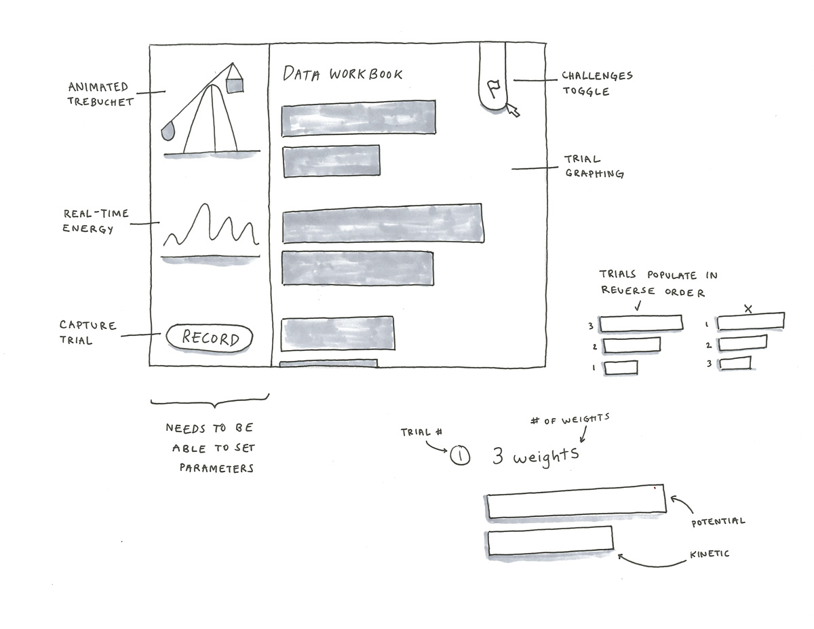
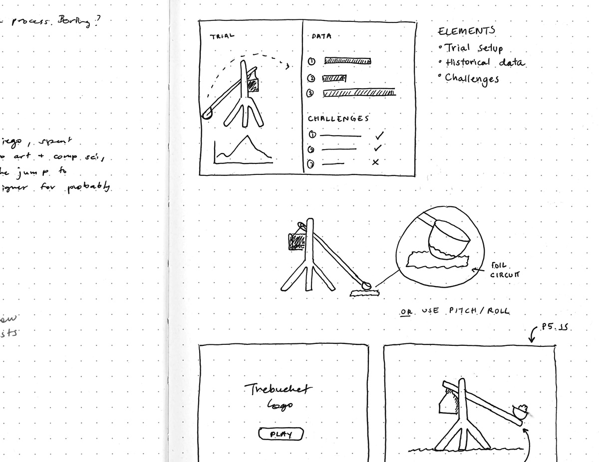
I started iterating on an interface with more elements integrated.
Developing a visual language
I began to develop a visual language for the interface that could balance focus and fun, while also drawing inspiration from Microsoft's aesthetic.
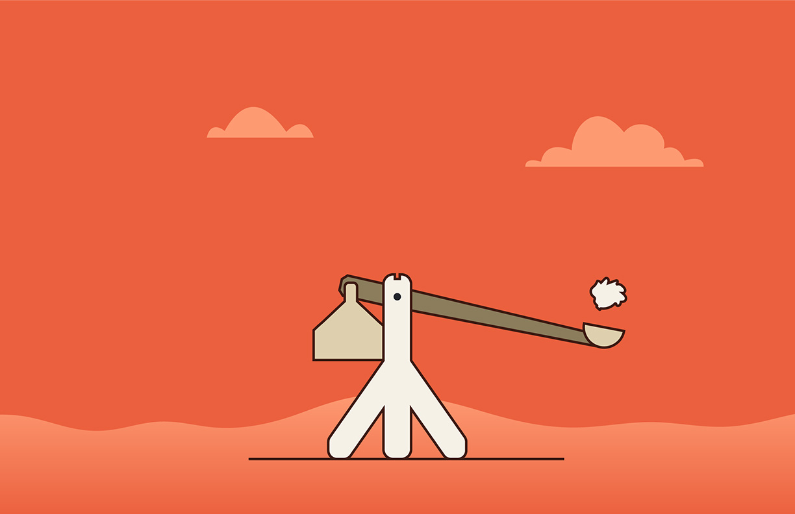
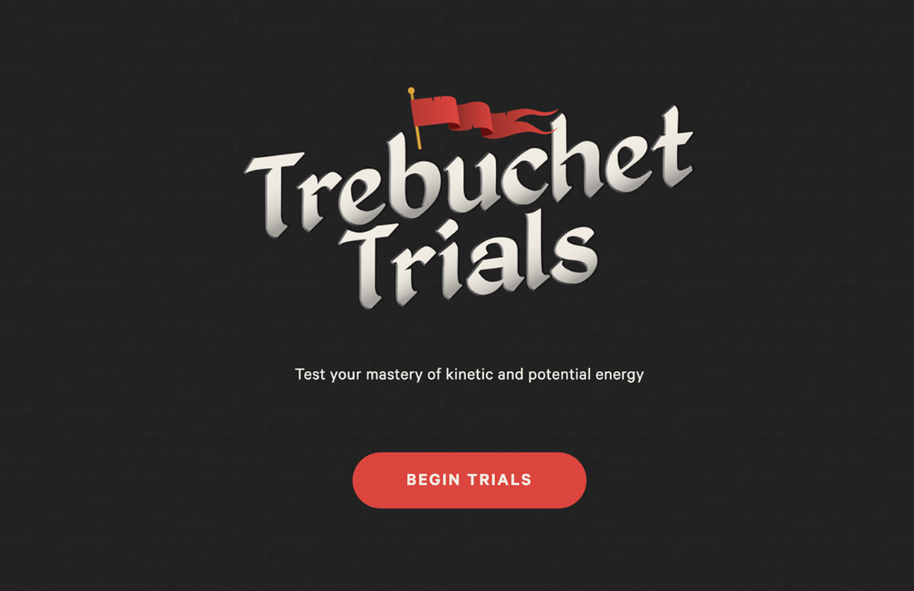
Polishing up a visual direction. I also made a logo.
I moved into code and discovered some features that I hadn't imagined.
Serendipitous coding
Working with Javascript – P5.JS in particular – made me realize that graphing energy values automatically after each trial was possible. This could address the issue we saw in
behavioral prototypes where keeping track of values became cumbersome–now kids could record data simply through playing.
This meant that the interface could be simplified, since the only manual input now needed was the number of weights being used.
Similarly, using CSS variables meant that it was easy to create different color palettes for the experiment and challenges sections, something which I had presumed to need extensive Javascript.
Detailed design spec
Still working on this section! Check back soon.
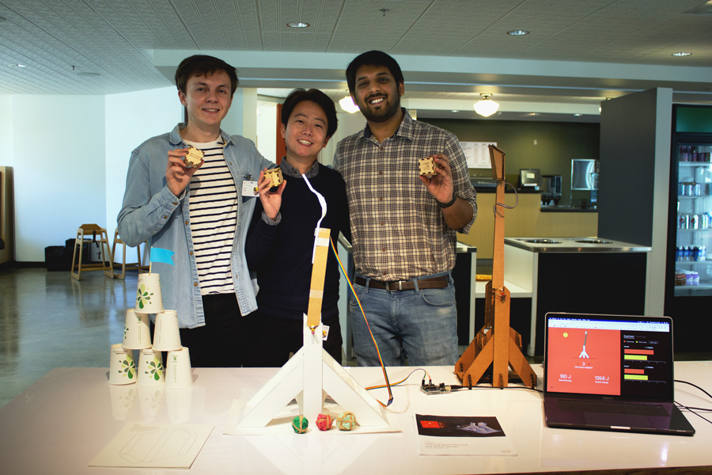
Presenting to Microsoft
Yeehaw! During a showcase at Microsoft in Redmond, WA, we won an award for the "best technical implementation"–the integration of physical and digital forms. Thanks to my great teammates Sakshat Goyal and Javan Wang, and also to advisors
Michael Smith and Jon Froehlich.
Reflecting on the experience
Strength in constraints
Designing with such a tight set of constraints gave our team the ability to rapidly ideate, downselect, and test our concepts and assumptions. We were always able to fall back on a set of key questions–is this achieving our desired
NGSS standard? Will this cost less than $10 per student? Would this work in a classroom?
Designing for multiple stakeholders
Possibly the most difficult aspect was meeting the needs of multiple stakeholders–teachers, students, and Microsoft Education would sometimes give clashing feedback. Our use of prototypes–from behavioral, to video, to functional,
varied according to the particular stakeholder, and allowed us to triangulate design insights through our interactions with each party.
Prototyping in code
Prototyping in code was an enlightening design exercise. Although we spent most of the time on paper and whitebords, it wasn't until we could interact with a functioning system that the experience became visceral. There's a tradeoff that
happens on paper: it's rapid to advance with sketches, but the gap between a static drawing and a breathing piece of code is vast. Working with code as a material is an opportunity to let new inspiration emerge from the making process.
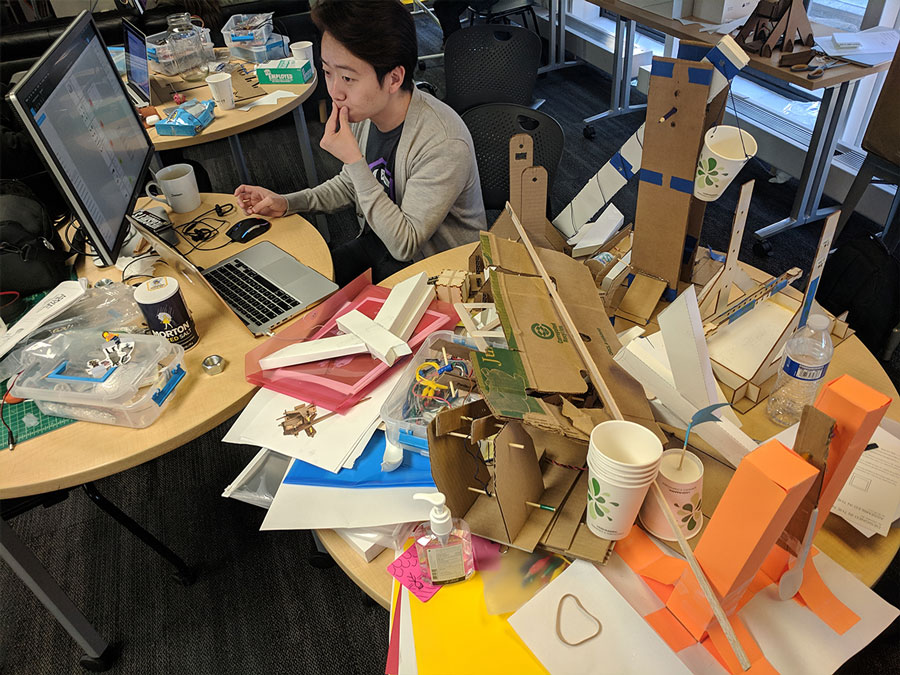
Someone described our studio mess as a "forest of trebuchets"
Measuring success
It's always difficult to measure the success of a student project–we didn't ship the full activity out to teachers, nor do we have the juicy statistics that most companies measure success by. However, I think that the success
of our project could be evaluated by the directness of our responses to prototype testing outcomes. We had a fairly rigorous process of distilling the key weaknesses of each prototype after each session and developing a plan to address or
further investigate each one. We constantly iterated on the physical form and the digital interface, to the point that the studio was littered with trebuchets and whiteboard scribblings.


 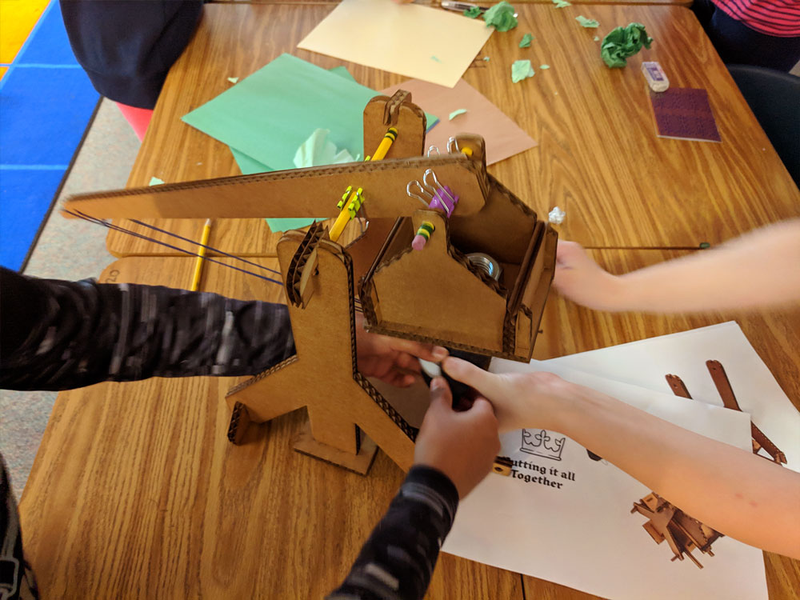
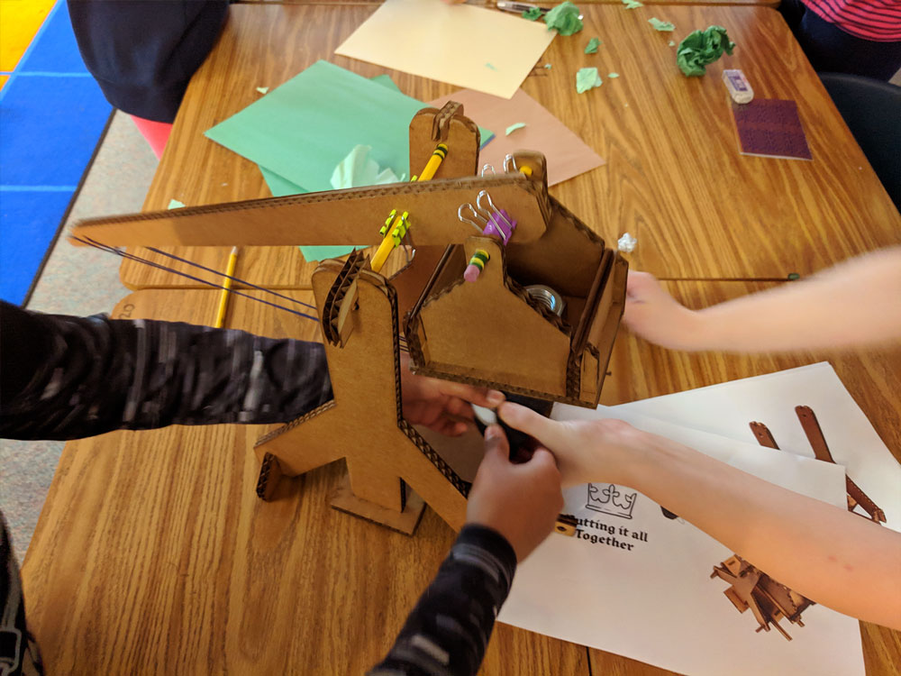
 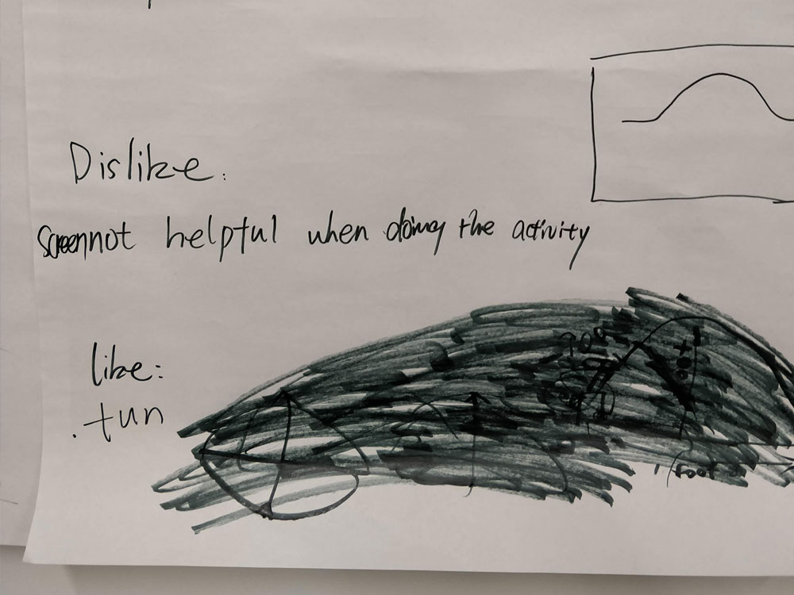
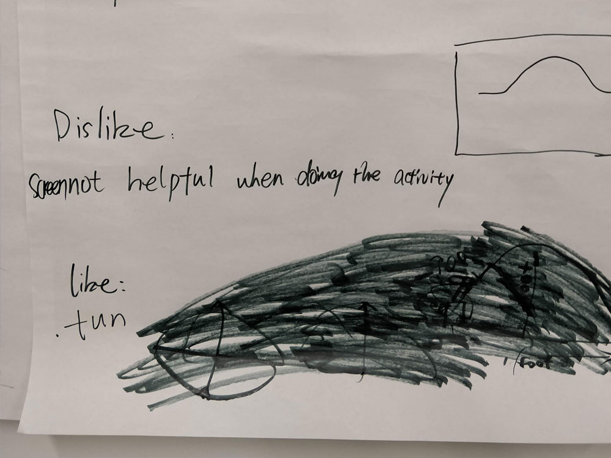